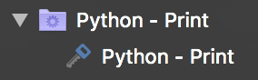

Dynamic Folders
Dynamic Folders are the main way to get rJSON into Royal TS and Royal TSX. They allow you to specify scripts that are expected to return rJSON which is then parsed, converted into objects and populated underneath the dynamic folder.
Various script interpreters are supported but availability differs between platforms. For instance, AppleScript is supported on the Mac but unavailable on Windows. VBScript on the other hand is not available on the Mac but well supported under Windows. For testing purposes you can also directly specify JSON. This allows you to "play" with the data format and easily verify if you're writing valid rJSON.
Currently, two separate scripts can be configured:
The "Dynamic Folder Script":
This script retrieves the content that should appear underneath the dynamic folder. Its return value must be a valid RoyalJSONDocument object.
The "Dynamic Credential Script":
This script retrieves detailed information (username, password, etc.) of dynamic credentials when a connection referencing a dynamic credential is opened. Its return value must be a valid RoyalJSONDynamicCredential object.
All scripts are expected to return their data in stdout and the exit code must be 0 for a script run to be considered successful. If either of those conditions is not met, an error will be displayed and the script output is discarded. For error handling purposes you may use stderr. If the exit code is not 0 and content is present on stderr, Royal TS/X will display the output of stderr to the user.
To actually execute a dynamic folder script the "Reload" command must be used from the context menu of a dynamic folder in the navigation panel. In the future, additional means of reloading a dynamic folder's content may be provided.
Tokens
You may already be familiar with tokens in Royal TS/X from other object types, like Command- and Key Sequence Tasks. In the context of dynamic folder scripts, tokens allow you to inject values of the dynamic folder into your scripts. You can, for instance use the $EffectiveUsername$ and $EffectivePassword$ tokens to inject credentials into your scripts. This is useful to ensure no confidential data is stored in plain-text inside your script's content. It also allows you to store parameters of your scripts in a central location instead of somewhere in the scripts.
Here's a simple Python example:
import json
jsonStr = json.dumps(
{
"Objects": [
{
"Type": "Credential",
"Name": "$Name$"
}
]
}
)
print(jsonStr)
In line 8 we're injecting the $Name$ token into the credential's Name property value.
Here's what this gets you in Royal TSX:

The name of the credential created from rJSON is the same as the dynamic folder's name. Obviously, this isn't quite a real world example but it should get the point over.
Basically it's up to you how/if you want to use tokens in your scripts. If you're for instance calling a web service that requires authentication in your script, it makes sense to not store the credentials directly in your script. Instead, you should save them in the dynamic folder's credential settings. You may even store the URL of your web service endpoint in a custom property instead of directly in the script and refer to it using the $CustomProperty.AlphanumericTitleWithoutSpaces$ token.
Script Interpreters
Royal TS/X ships with support for the most common script interpreters. Among others, we support Bash, Python, Perl and PowerShell. Like previously mentioned, the list of supported script interpreters differs between platforms and will likely expand in the future.
Royal TS/X doesn't ship with binaries of the supported script interpreters. So in some cases, if the script interpreter of your choice doesn't ship with the operating system, you may have to install it before using it from Royal TS/X. For example, while PowerShell Core is supported on macOS, it doesn't ship with the OS and thus is required to be installed before use.
When a dynamic folder script is executed, any tokens contained within the script are replaced by actual values and a temporary file with the full, expanded content is written to disk. On macOS, we prepend the script's content with the shebang of the selected script interpreter. For example, this is Python's shebang: #!/usr/bin/env python. This ensures that the OS can find the correct script interpreter to execute the script with. After the script finishes execution, the temporary file is deleted.